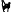
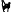

Arnhem Cave
Useful Information
| Location: |
Arnhem Cave & Lodge, Windhoek Rural, Khomas Region, Namibia.
120 km (90 min. drive) from Windhoek. Follow B6 towards Gobabis 45 km, then right on M51 75 km. Signposted. (-22.70177156, 18.09671402) |
| Open: |
All year daily 7:30, 16:30. [2023] |
| Fee: | |
| Classification: |
 Karst Cave
Histoplasmosis
Ghost-Rock Karstification Karst Cave
Histoplasmosis
Ghost-Rock Karstification
|
| Light: | lamps provided |
| Dimension: | L=4,494 m, VR=113 m, T=22-25 °C, H=97 %. |
| Guided tours: | self guided |
| Photography: | allowed |
| Accessibility: | no |
| Bibliography: |
J.E.J. Martini (1992):
Swaknoite [Ca(NH4)2 · (HPO4)2 · H2O, orthorhombic]: A new mineral from Arnhem cave, Namibia
Bulletin of the South African Speleological Society, 32, pp 72-74.
J.E.J. Martini (1994): Two new minerals originated from bat guano combustion in Arnhem Cave, Namibia Bulletin of the South African Speleological Society, 33, pp 66-69. |
| Address: | Arnhem Cave & Lodge, Windhoek Rural, Khomas Region, Namibia, Tel: +264-81-735-4348, Tel: +264-81-129-0131. |
| As far as we know this information was accurate when it was published (see years in brackets), but may have changed since then. Please check rates and details directly with the companies in question if you need more recent info. |
|
History
| 1930 | discovered by farmer Daniel Bekker. |
| 1932 | Daniel Bekker begins mining the bat guano as fertilizer. |
| 1940 | guano mining ends because its not profitable any more. |
| 1994 | opened to the public. |
| 2020 | new owners, lodge renovated. |
Description
Arnhem Cave is the longest cave of Namibia. The cave is on private property, on a former farm which first offered camping and later some chalets for the cave visitors. Some years ago the reviews got bad, as the chalets were rundown, but a new owner in 2020 renovated the site which is now obviously in a very good state. Cave tours are offered only to stay over guests of the lodge or campground, which sounds a bit like blackmail to us, but is probably a result of the rather strenuous tour. The full cave visit, which reaches a depth of 110 m, takes 7 hours, which includes the walk to the cave, the cave tour and the walk back. The tours start twice daily, so it's either a full day tour starting very early or a night tour. In both cases it makes no sense to look for a different accommodation. However, that they are neither on booking.com nor have their own booking system is a little disturbing. They just offer an email form but give no prices, neither for the overnight stay nor for the cave tour.
The geology of the cave is quite exceptional, as it is a karst cave but almost devoid of speleothems. The rock is limestone and dolomite, which has thin quartzite and slate layers. These insoluble rocks resisted dissolution, while the limestone was dissolved. At some point the thin layers were not stable enough anymore and collapsed, forming a loose quartz sand sediment. Processes like this are known as ghost-rock karstification. The quartz from the insoluble components of the rock, but also the bat guano, are a source of exceptional minerals. Among others the cave contains arcanite, archerite, cristobalite, dittmarite, mundrabillaite, quartz and swaknoite. Quite interesting is the swaknoite (NH4)2Ca(PO3OH)2·H2O), which is a mineral which occurs in the bat guano. As far as we know it, is only known from this cave, which is also the type locality.
The cave tour stars at the lodge, it's a 3 km hike to the cave entrance, which is why tours start early or late to avoid the heat. As far as we understand it is possible to do at least half of it with a 4WD, but the operator does not disclose any details to the tours. The cave entrance is a huge portal with a width of 45 m. From here a huge passage of the same size leads down with a slope of 30° for 122 m, developed with a staircase with stone steps. Deeper inside the cave there are various sections with trails, mostly wooden planks and some iron ladders. It seems they were installed during the guano mining. According to an older description the cave has two different tours, a short and long loop. The long loop goes down to the deepest point and includes some climbs, on ladders and otherwise, which make this tour a little demanding but spectacular. The new owners state "It will be entirely up to you on how far you want to go before you want to turn back". Clothes which may get dirty and walking shoes are a good idea. The cave is very warm and humid, so wear as little clothes as possible.
The cave is home to five species of bats, giant leaf-nosed bat (Hipposideros commersoni), long-fingered bat (Miniopterus schrelbersi), leaf-nosed bat (Hipposideros caffer), egyptian slit-faced bat (Nycteris thebalca), and horseshoe bat (Rhinolophus denti). Giant leaf-nosed bats, also known as Commerson's leaf-nosed bats, are found throughout equatorial Africa and on the island of Madagascar. They are among the largest insectivorous bats, weighing 40 to 180 g when mature, with length between 110 and 145 mm, and wingspans between 540 and 560 mm. The cave once contained very large deposits of bat guano, which has been mined on a large scale between 1932 and 1940. The remaining deposit is estimated at 15,000 ton, but since the invention of artificial fertilizer it's much cheaper to produce fertilizer industrially, further mining would be unprofitable. Its also most likely that such an operation would be forbidden to protect the bats. Bat guano dust in the air can cause histoplasmosis, so we recommend to wear masks in the cave, fortunately we are used to wear them after the pandemic. Please respect the ecological importance of bats, and do not needlessly disturb bat colonies, particularly during the Namibian wet season (November to April) when bats are breeding.
- See also
 Search Google for "Arnhem Cave"
Search Google for "Arnhem Cave" Google Earth Placemark
Google Earth Placemark Arnhem-Höhle
Arnhem-Höhle  - Wikipedia (visited: 10-MAY-2020)
- Wikipedia (visited: 10-MAY-2020) Lots to do at Arnhem Caves & Leisure CC, official website (visited: 17-APR-2023)
Lots to do at Arnhem Caves & Leisure CC, official website (visited: 17-APR-2023)- Arnhem Cave - Mineralienatlas (visited: 17-APR-2023)
- Elena Travel Services: Arnhem Cave day tours (visited: 17-APR-2023)
 Index
Index Topics
Topics Hierarchical
Hierarchical Countries
Countries Maps
Maps Search
Search